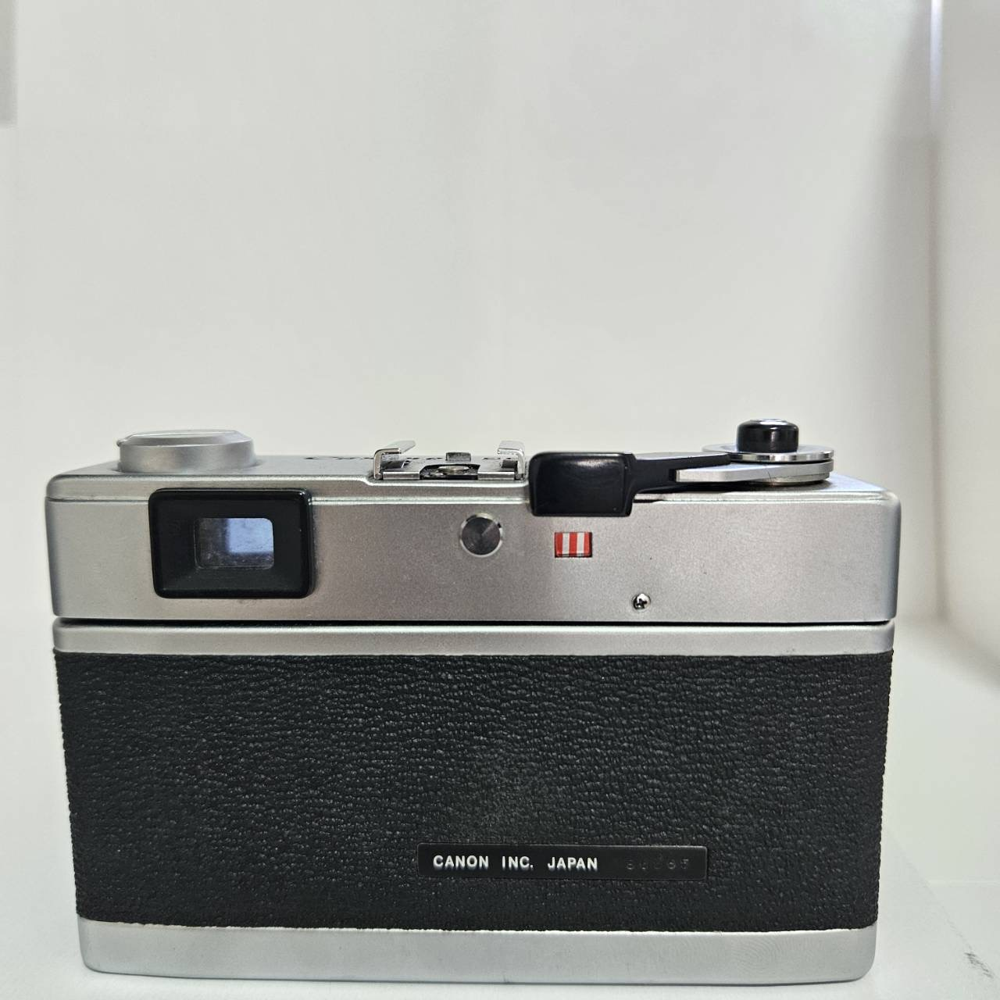

Canon Canonet 28


Product Details
Category: Vintage / Antiques
Condition: Used
Description: A compact and easy-to-use 35mm rangefinder camera. Designed for everyday photography, it features a sharp 40mm f/2.8 lens and automatic exposure control, making it perfect for both beginners and enthusiasts. Its lightweight design and classic style make the Canonet 28 a reliable companion for film lovers looking for a vintage shooting experience.
Film size:35mm
Price: ¥12,000